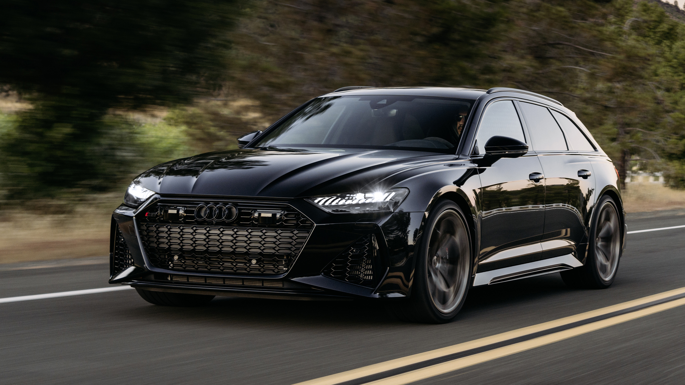
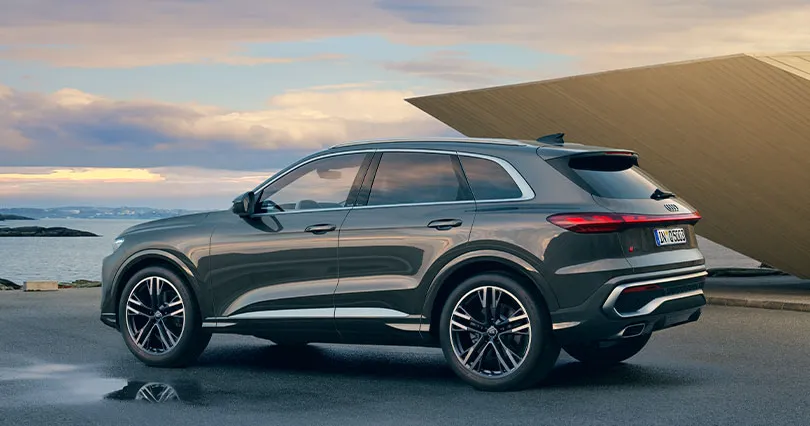
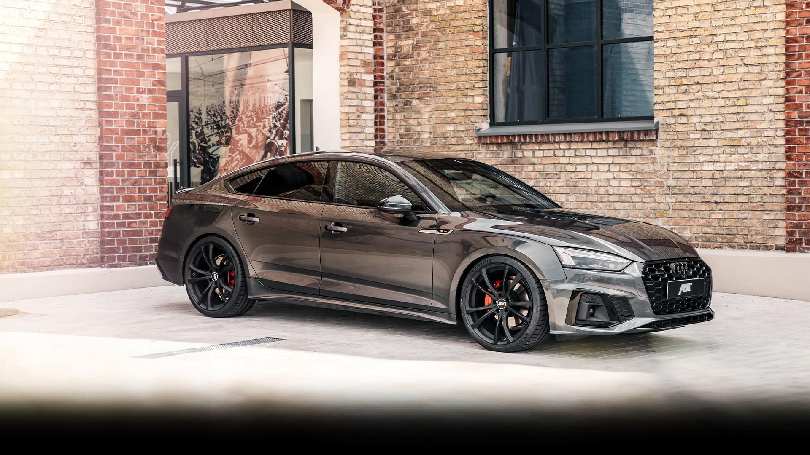

RS6 Avant Performance
Az eddigi legerősebb benzines RS — V8-as biturbóval.

Motor: 4.0 literes V8 TFSI biturbo
4,0 literes V8-as biturbo, 630 lóerő — kombi karosszériában.
Az RS6 Avant Performance az Audi Sport klasszikus csúcskombija. A 4,0 literes, biturbós V8-as benzines motor 630 lóerőt és 850 Nm nyomatékot ad le. Nyolcfokozatú tiptronic váltóval és quattro összkerékhajtással rendelkezik.
Audi Q5
A vadonatúj prémium SUV — benzines és dízel motorokkal.

Motor: 2.0 TFSI — MHEV plusz
Vadonatúj prémium SUV, benzines és dízel motorokkal.
A Q5 a legújabb generációja az Audi legnépszerűbb SUV-jának. A 2.0 TFSI benzines motor 204 lóerőt ad le, enyhe hibrid rendszerrel kombinálva, quattro hajtással és hétfokozatú S tronic váltóval.
Audi A5
A megújult A5: új dizájn, új platform, enyhe hibrid technika.

Motor: 2.0 TFSI — MHEV plusz
Új karosszéria, új platform, finomított hibrid technika.
A megújult A5 az Audi új formanyelvét képviseli. A 2.0 TFSI benzines motor MHEV plusz enyhe hibrid rendszerrel dolgozik együtt, dinamikus és takarékos vezetési élményt nyújtva.
Összehasonlítás
| ADATLAP | RS6 AVANT PERFORMANCE | Q5 | A5 |
|---|---|---|---|
| Motor | 4.0 V8 TFSI | 2.0 TFSI | 2.0 TFSI |
| Teljesítmény | 630 LE | 204 LE | 204 LE |
| Gyorsulás (0-100) | 3,3 mp | 7,5 mp | 7,4 mp |
| Végsebesség | 280 km/h | 225 km/h | 240 km/h |
| Hajtás | quattro összkerék | quattro összkerék | Elsőkerék / quattro |
| Váltó | 8 fokozatú tiptronic | 7 fokozatú S tronic | 7 fokozatú S tronic |